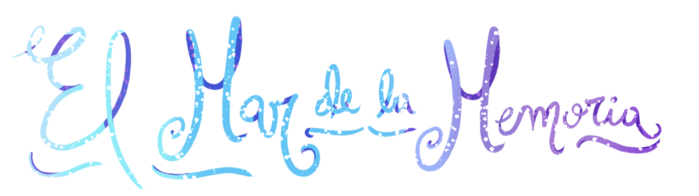

Ubicación
Título de la Memoria
Archivo de Audio Guardado

1. Añade una memoria: elige un país, escribe el lugar y guarda tu recuerdo para crear una neurona.
2. Explora: las neuronas se mueven de forma independiente; las líneas de la ola muestran sus conexiones geográficas.
3. Dale forma: abre una neurona y usa pincel, borrador, color, tamaño o rellenar. El lienzo mantiene la proporción de la imagen guardada.
4. Comparte: pulsa “Compartir mi trazo” para añadirlo a la galería pública.
La música de fondo se carga desde fondo.mp3 en este repositorio cuando el archivo está disponible.
Siembra una memoria visible para toda la comunidad